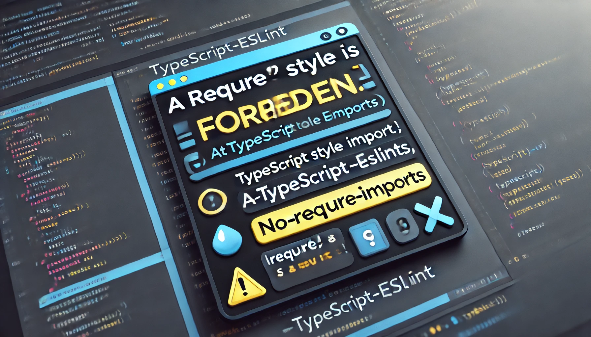

TypeScript에서는 require() 방식의 import를 권장하지 않음
대신 import 문법을 사용하는 것이 일반적
해결 방법 1: import 사용
import mysql from "mysql2/promise";
const pool = mysql.createPool({
host: process.env.DB_HOST, // 엔드포인트의 호스트 이름
user: process.env.DB_USER, // 사용자 이름
password: process.env.DB_PASSWORD, // 비밀번호
database: process.env.DB_NAME, // 데이터베이스 이름
port: 3306,
});
export default pool;